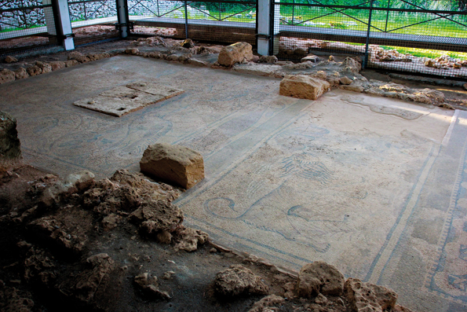

Sant Climent, viel auf engem Raum
 Nur vier Kilometer von der Stadt Mahon entfernt erhebt sich Sant Climent. Das kleine Dorf, mit weniger als tausend Einwohnern, ist sicherlich einen Stop wert. Sant Climent hat eine fast 200 Jahre alte Geschichte und hat sich sein uriges, gemütliches Ambiente bewahrt. Ein neuer Beweis dafür das, das ruhige Inselleben nicht nur ein Klischee ist, sondern pure Realität. Die Kirche von Sant Climent ist ein kleines architektonisches Meisterwerk mit kleinen gelb-weissen Akzenten. Sie befindet sich auf dem Dorfplatz des Ortes, wo sich das Leben abspielt. Pausieren Sie hier ein Weilchen und Sie werden bemerken das die Uhren hier anders ticken. Falls Sie ein Musikliebhaber sind, besuchen Sie das brühmte Casino von Sant Climent, direkt gegenüber vom Dorfplatz. Eine Bar mit lebenslanger Geschichte und bekannt für seine leckeren Tapas. Einmal die Woche am Abend werden, schon seid jeher, im Hinterzimmer der Bar orginelle Jazznächte organisiert. Schauen Sie doch einfach mal rein. Apropos Geschmack, in Sant Climent gibt es auch eine Bierfabrik, wo Sie das 100% menorquinische Bier kosten können. Gibt es einen besseren Plan, als ein kühles Bierchen unter menorquinischer Sonne mit mediterraner Brise? Falls Sie darauf Lust haben, wird man Sie gerne im Es Moli de Foc begrüssen, einer der besten Resturants von Menorca. Verpassen Sie es nicht hier an zu halten. Schauen Sie auch bei Can Bernat vorbei, dirket gegenüber der Kirche. Can Bernat ist ein Geschäft das hauptsächlich die gut auserwählten, typischen Inselprodukte verkauft. Ganz in der Nähe des Dorfes existert noch eine der letzten Perle der Insel: die frühchristliche Basilika Fornàs Torello. Die aus dem sechsten Jahrhundert stammende Konstruktion ist praktisch nicht mehr erhalten, stattdessen können Sie aber das römische Mosaik bewundern, was dort die Gänge plastert. Es besteht aus Löwenbildern und Palmen die den Tot und auch denLebensbaum darstellen. Sehen Sie sich gut um und lassen Sie diese uralten Kunstwerke auf sich wirken, stellen Sie sich einfach vor das hier schon vor 1.500 Jahren die Menorquiner ihre Runden drehten. Beeindruckend, nicht wahr?
Nur vier Kilometer von der Stadt Mahon entfernt erhebt sich Sant Climent. Das kleine Dorf, mit weniger als tausend Einwohnern, ist sicherlich einen Stop wert. Sant Climent hat eine fast 200 Jahre alte Geschichte und hat sich sein uriges, gemütliches Ambiente bewahrt. Ein neuer Beweis dafür das, das ruhige Inselleben nicht nur ein Klischee ist, sondern pure Realität. Die Kirche von Sant Climent ist ein kleines architektonisches Meisterwerk mit kleinen gelb-weissen Akzenten. Sie befindet sich auf dem Dorfplatz des Ortes, wo sich das Leben abspielt. Pausieren Sie hier ein Weilchen und Sie werden bemerken das die Uhren hier anders ticken. Falls Sie ein Musikliebhaber sind, besuchen Sie das brühmte Casino von Sant Climent, direkt gegenüber vom Dorfplatz. Eine Bar mit lebenslanger Geschichte und bekannt für seine leckeren Tapas. Einmal die Woche am Abend werden, schon seid jeher, im Hinterzimmer der Bar orginelle Jazznächte organisiert. Schauen Sie doch einfach mal rein. Apropos Geschmack, in Sant Climent gibt es auch eine Bierfabrik, wo Sie das 100% menorquinische Bier kosten können. Gibt es einen besseren Plan, als ein kühles Bierchen unter menorquinischer Sonne mit mediterraner Brise? Falls Sie darauf Lust haben, wird man Sie gerne im Es Moli de Foc begrüssen, einer der besten Resturants von Menorca. Verpassen Sie es nicht hier an zu halten. Schauen Sie auch bei Can Bernat vorbei, dirket gegenüber der Kirche. Can Bernat ist ein Geschäft das hauptsächlich die gut auserwählten, typischen Inselprodukte verkauft. Ganz in der Nähe des Dorfes existert noch eine der letzten Perle der Insel: die frühchristliche Basilika Fornàs Torello. Die aus dem sechsten Jahrhundert stammende Konstruktion ist praktisch nicht mehr erhalten, stattdessen können Sie aber das römische Mosaik bewundern, was dort die Gänge plastert. Es besteht aus Löwenbildern und Palmen die den Tot und auch denLebensbaum darstellen. Sehen Sie sich gut um und lassen Sie diese uralten Kunstwerke auf sich wirken, stellen Sie sich einfach vor das hier schon vor 1.500 Jahren die Menorquiner ihre Runden drehten. Beeindruckend, nicht wahr?
Ganz in der Nähe von der Basilika können Sie auch ein Talaiot besichtigen, mit kleinen prähistorischen Überresten von einem Rundhaus. Schauen Sie vorbei und endecken Sie was Menorcas Steine alles zu verstecken haben. In der Tat ist das archäologische Erbe der Insel spektakulär.Zurück in der Ortschaft Sant Climent. Wie fast jedes besiedeltes Gebiet auf Menorca, gibt es auch hier seine Feste. In Sant Climent findet die bekannte Fiesta mit den Pferden am dritten Wochenende im August statt. Damit aber nicht genug, am darauf folgendem Montag fügen die Santclimenters noch eine riesige Wasserschlacht ein, was immer ein grosses Vergnügen ist. Wenn Sie also teilnehmen möchten dann denken Sie an die geeignete Kleidung. Lassen Sie sich von sinnflutartigen Regenfällen erfrischen. Sehen Sie, Sant Climent hat Ihnen viel zu bieten. Lassen Sie die Möglichkeit nicht aus in dieser Enklave, nahe des Flughafens, zu stoppen.